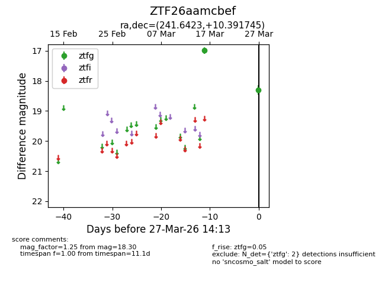
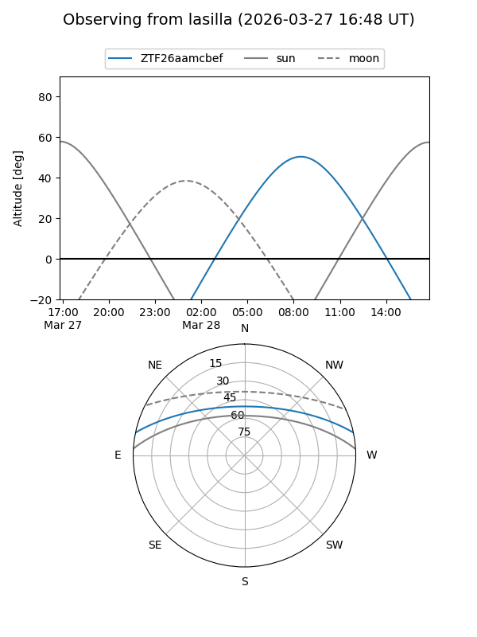
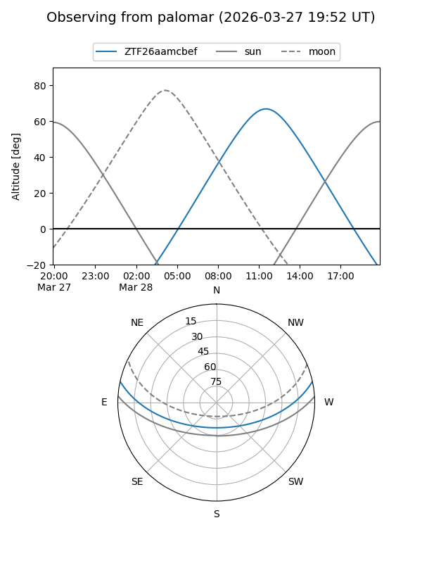

ZTF26aamcbef
Target ZTF26aamcbef at 2026-03-27 14:16
Aliases and brokers:
FINK: link
Lasair: link
ALeRCE: link
alt names
ZTF26aamcbef (ztf,fink_ztf)
Coordinates:
equatorial (ra, dec) = 241.6423,+10.39174
equatorial (HMS+DMS) = 16:06:34.16,+10:23:30.28
galactic (l, b) = (22.5919,+41.22794)
Flags:
Photometry:
last ztfg=18.30
2 ztfg detections
Lightcurve

Visibility


Additional plots